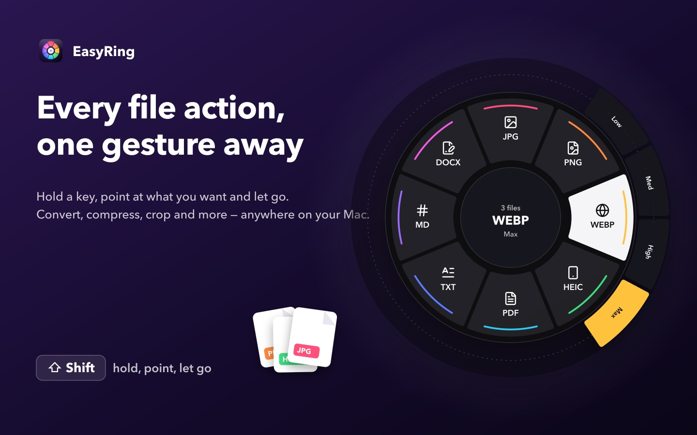
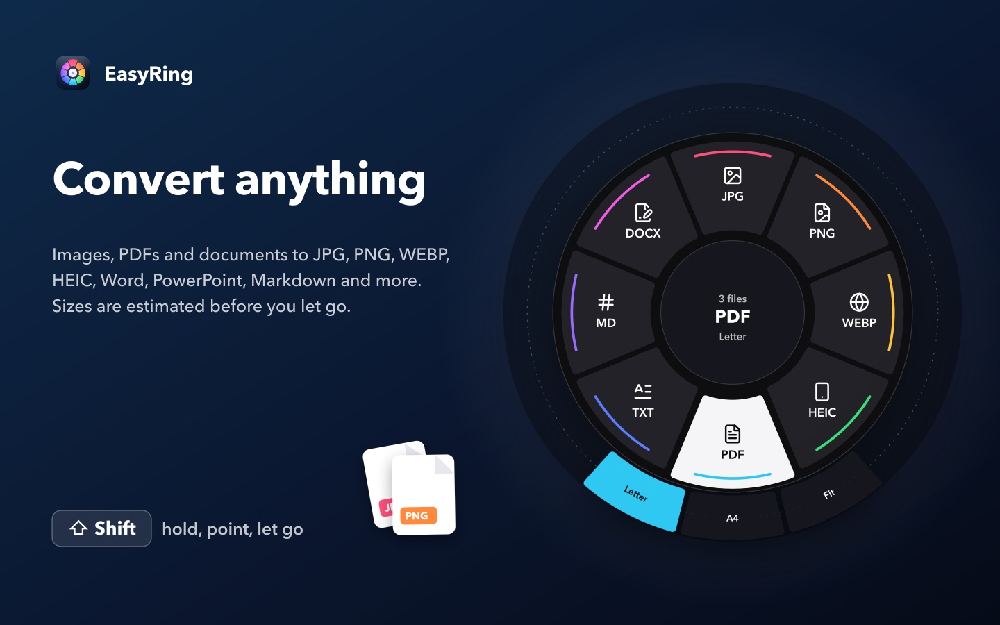
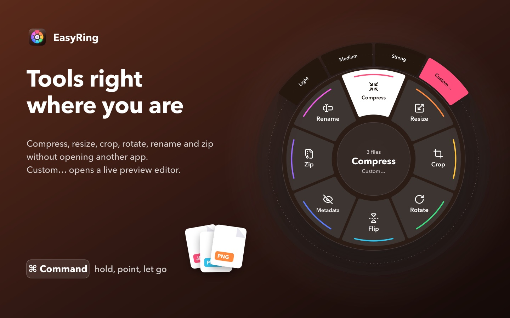
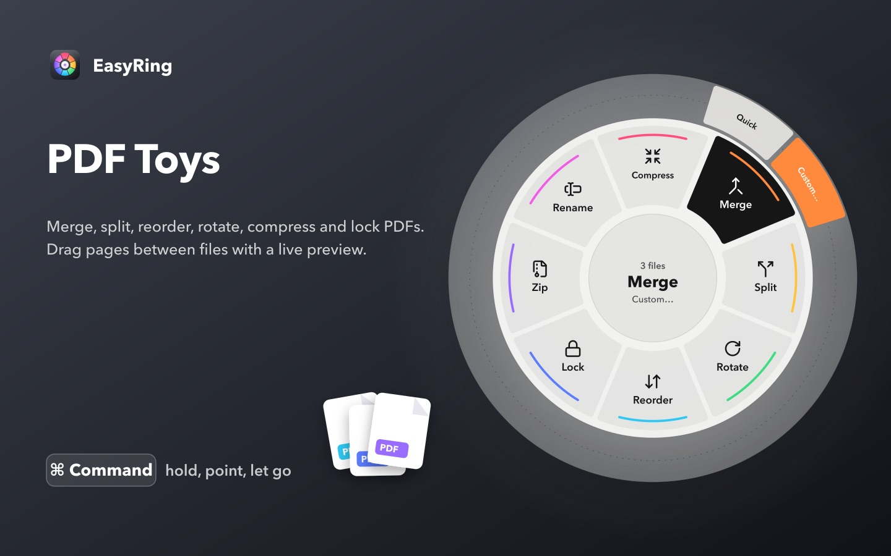
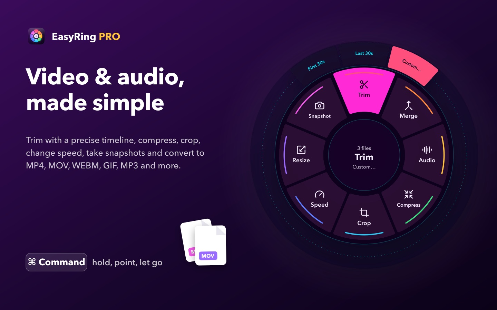
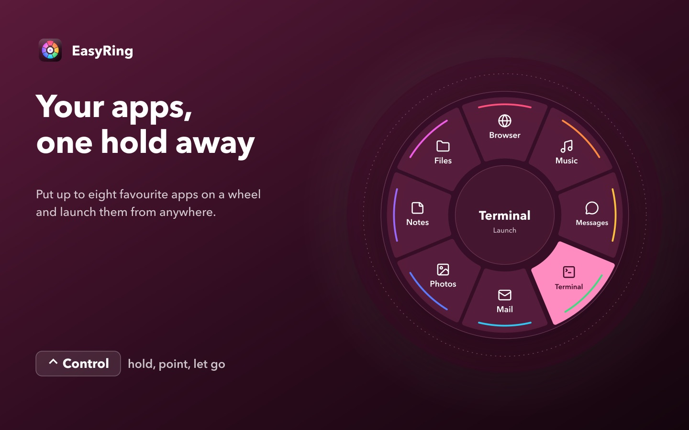
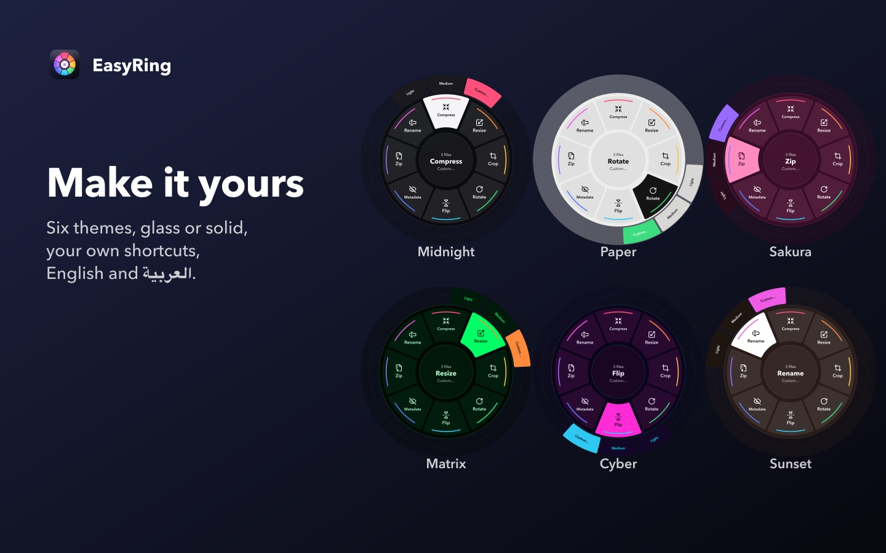

Every file action,
one gesture away
Select files in Finder, hold a key, point at what you want and let go. Convert, compress, resize, crop and more, right where your files are.
Download on the Mac App Store Free for images, PDFs and documents · Pro unlocks video & audio with one purchaseThree moves. That's it.
- 1
Select
Pick files in Finder: one, or a hundred.
- 2
Hold
Hold ⇧ Shift, ⌘ Command or ⌃ Control. The wheel appears under your cursor.
- 3
Let go
Point at what you want and release. The result lands right next to the original.
Everything your files need
One gesture
Hold Shift, Command or Control, point and let go. Works on one file or a whole batch.
Convert anything
Images to JPG, PNG, WEBP, HEIC and PDF. Documents to Word, PowerPoint, Markdown and more.
Tools where you are
Compress, resize, crop, rotate, rename and zip, with a live preview when you want it.
PDF Toys
Merge, split, reorder, rotate, compress and lock PDFs.
Video & audio PRO
Trim, merge, compress, crop and convert to MP4, MOV, WEBM, GIF, MP3 and more.
Private by design
Everything happens on your Mac. No account, no ads, no tracking.
See it in action







Pro, when you want more
Video & audio on the same wheel. One purchase, yours for good. No subscription.
- Video to MP4, MOV, WEBM and GIF
- Audio out as MP3, M4A, WAV or FLAC
- Trim, merge, crop, compress, change speed
- Every future Pro tool included
Nothing leaves your Mac
Every conversion happens on your Mac. No uploads, no account, no tracking.
Read the privacy policy